Các Bãi Biển Bà Rịa Vũng Tàu
- Vũng Tàu nổi tiếng là thành phố biển sở hữu hàng loạt những bãi tắm đẹp thu hút du khách ở trong và
ngoài nước đến tham quan, khám phá. Những bãi biển ở Vũng Tàu ghi điểm với du khách bởi sự sạch sẽ và an
toàn thích hợp cho du khách tắm biển cũng như vui chơi nhiều môn thể thao dưới nước. Đến Vũng Tàu nếu du
khách muốn tắm biển thì đừng bỏ qua những bãi biển xinh đẹp, sạch sẽ và cực kỳ an toàn dưới đây nhé!
1. Bãi Trước Vũng Tàu
- Bãi Trước Vũng Tàu là bãi biển nổi tiếng và không có ai không biết đến. Nếu như có dịp đến với Vũng
Tàu định bạn không thể bỏ qua bãi biển này. Đến đây du khách có thể thoải mái hòa mình vào dòng nước
trong xanh, mát lành và đặc biệt là bạn sẽ bị mê mẩn trước vẻ đẹp thiên nhiên ở đây.
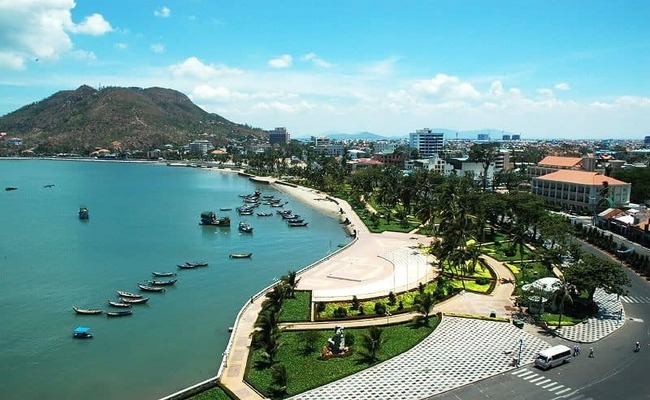
-Bãi Trước Vũng Tàu còn có tên gọi là bãi Tầm Dương, nằm ở phía Tây Nam của thành phố Vũng Tàu. Bãi
Trước nằm ở giữa núi Lớn và núi Nhỏ nên được ví như dòng vịnh xanh lặng sóng. Người ta ví bãi biển tựa
như vầng trăng khuyết với hai đầu là núi Tao Phùng và núi Tương Kỳ, tạo nên vẻ đẹp non nước hữu tình
hiếm có.
-Gần bãi Trước còn có công viên giải trí nên du khách đến với bãi biển này vẫn rất đông. Ngoài ra còn có
các dịch vụ nghỉ dưỡng, nhiều khách sạn, nhà nghỉ được xây dựng tạo nên sự phồn hoa. Hơn nữa là các
trung tâm thương mại sầm uất bậc nhất của Vũng Tàu.
2. Bãi Sau Vũng Tàu
- Bãi Sau còn được gọi với cái tên khác là Thủy Vân. Bãi Sau thường bình yên hơn với Bãi Trước, đây là
địa
điểm được nhiều người yêu thích bởi khá yên tĩnh và ít sóng biển hơn, phù hợp với đối tượng người già và
trẻ em. Bãi Sau còn là một địa điểm lý tưởng để bạn có thể thoải mái ngắm hoàng hôn hay bình minh.
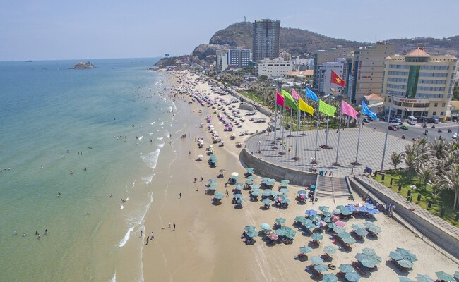
3. Bãi biển Lộc An Vũng Tàu
- Bãi biển Lộc An nằm cách trung tâm Vũng Tàu 50km, thu hút du khách bởi vẻ đẹp hoang sơ, mộc mạc hiếm
có. Đường bờ biển có rất nhiều cát, màu nước lại xanh như ngọc. Bạn có thể vừa tắm biển vừa dạo quanh
khu rừng nguyên sinh nước mặn với hệ động thực vật phong phú vô cùng.
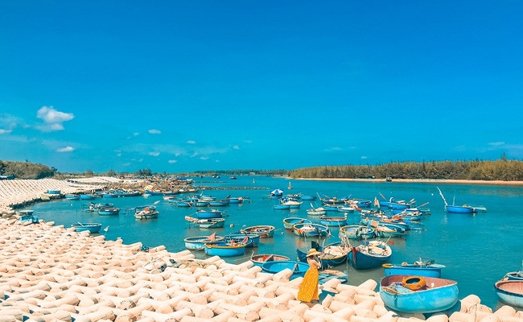
- Du khách muốn đến bãi biển Lộc An thì có thể chọn thuê xuồng hoặc có thể thuê thuyền thúng để di
chuyển dễ dàng qua 1 hồ nước lớn trước khi tới được bãi biển Lộc An. Ngoài ra, những cồn cát nhìn trên
bãi biển rất giống như cánh đồng cát ở Ninh Thuận hay các sa mạc và các nước Ấn Độ, du khách còn có cơ
hội ngắm hoa anh đào, loài hoa này nổi tiếng ở Nhật Bản.
4. Biển Đồi Nhái Vũng Tàu
- Bãi biển Đồi Nhái với khung cảnh hoang sơ, yên tĩnh cũng là một cái tên nổi bật trong danh sách những
bãi biển sạch sẽ, an toàn ở Vũng Tàu được du khách rất yêu thích lựa chọn khi đến đây du lịch. Nơi đây
chưa được khai thác và trông vẫn còn hoang sơ, nước biển xanh mát vì có vị trí nằm cách xa khu vực dân
cư. Nhưng chính những điều này đã tạo nên sức hút riêng được lòng du khách của bãi biển này.Ngoài ra bãi
biển Đồi Nhái Vũng Tàu còn được xem như là một nơi có phong cảnh tuyệt vời để chụp hình sống ảo với bờ
cát trắng hay cảnh hữu tình bên hàng dừa đung đưa.
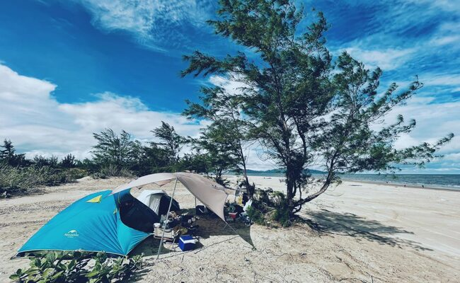
5. Biển Hồ Tràm Vũng Tàu
- Biển Hồ Tràm chính là nơi lý tưởng dành cho bạn để khám phá không gian biển, vui chơi cũng như nghỉ
dưỡng. Biển Hồ Tràm được biết đến là một trong những bãi biển Vũng Tàu có địa hình khá độc đáo đó là nơi
giao nhau của 2 khu vực Bình Châu và Long Hải. Đến bãi biển này du khách sẽ bắt gặp nhiều resort có quy
mô lớn với cơ sở hạ tầng hiện đại và được đầu tư kỹ lưỡng được xây dựng quanh bãi biển.
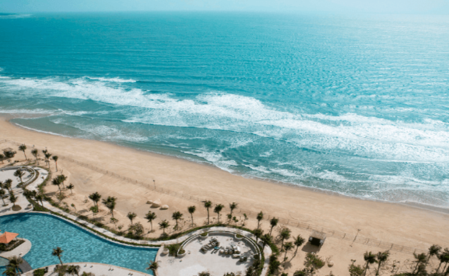
- Biển Hồ Tràm khiến không chỉ ở trong nước mà báo chí quốc tế phải tốn không ít giấy mực, theo như 1 tờ
báo của Mỹ, nơi đây đã được công nhận là bãi biển đẹp mộc mạc và hoang sơ nhất thế giới. Bãi biển xinh
đẹp này ghi điểm với du khách bởi sự sạch sẽ nước rất trong và xanh do người dân và các khách du lịch
đều có ý thức bảo vệ môi trường không xả rác xuống biển.
6. Bãi biển Hồ Cốc Vũng Tàu
- Bãi biển Hồ Cóc được ưa thích bởi nhiều cảnh đẹp và khung cảnh yên tĩnh lạ thường. Đây là bãi biển
được nhiều bạn trẻ yêu thích bởi nhiều khối đá bên bờ biển, sóng tung bọt trắng xóa. Bãi biển cách trung
tâm thành phố Hồ Chí Minh khoảng 125km nhưng vẫn rất đông khách. Một điều đặc biệt ở đây là có cả khu
suối nước nóng cho bạn giảm căng thẳng sau những ngày làm việc mệt mỏi nữa đấy.
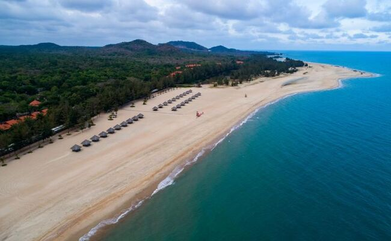
7. Biển Suối Ồ Vũng Tàu
- Nằm cách chợ Bình Châu về hướng tây nam khoảng 3km, biển Suối Ồ hay còn gọi được gọi với cái tên là
biển Sông Lô là một trong những điểm đến mới tại Vũng Tàu được ít người biết đến. Biển suối Ồ gây ấn
tượng, thu hút du khách bởi đây là một trong những bãi biển hiếm hoi vừa có nước ngọt và nước mặn ở Việt
Nam.
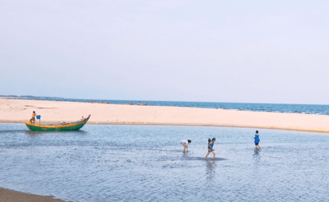
- Biển Suối Ồ là bãi biển mới được đưa vào khai thác ở Vũng Tàu trong vài năm trở lại đây. Ngay cạnh
biển Suối Ồ là suối nước nóng Bình Châu nên bạn có thể lên lịch khám phá trong ngày.
- Đặc điểm thú vị ở biển Suối Ồ là có dòng biển nước ngọt và nước mặn song song nhau bởi vì bãi biển này
một bên là sông, bên còn lại chính là biển xanh. Đây là điểm đặc biệt mà ít bãi biển nào có được.
8. Bãi biển Chí Linh Vũng Tàu
- Bãi tắm Chí Linh chỉ cách trung tâm thành phố khoảng 3km nên bạn chỉ cần đi xe máy khoảng 10 phút là
đến nơi. Hiện nay bãi tắm Chí Linh cũng đang phát triển nhiều loại hình du lịch như lều trại, cắm trại
qua đêm,..Khuôn viên bãi cát rất sạch sẽ để chụp ảnh nữa chứ.
 - Cạnh bờ biển Chí Linh là làng chài mộc mạc. Bạn có thể tham gia một ngày đánh bắt cá cùng người dân
làng chài và thưởng thức những món hải sản bình dân ngay ở đây.
9. Bãi tắm Thủy Tiên Vũng Tàu
- Bãi tắm Thủy Tiên là một trong những bãi biển làm xao xuyến bao nhiêu du khách. Với những cảnh đẹp hút
hồn từ bờ cát trắng cùng với những dòng sóng nước biển xanh dạt dào bên bờ rất thích hợp cho các hoạt
động vui chơi trên bờ biển.
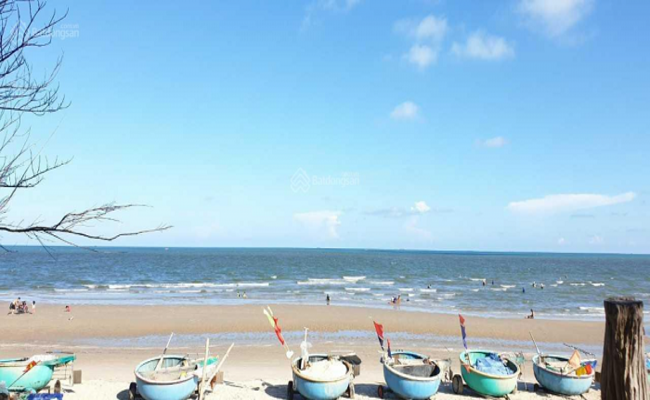
- Hơn nữa bạn có thể tận hưởng hải sản rất rẻ mà lại tươi ngon ở bãi tắm Thủy Tiên. Rất thích hợp cho
những buổi picnic hay cắm trại qua đêm đều rất tuyệt vời. Vì thế đây là một địa điểm tuyệt vời để tận
hưởng kỳ nghỉ cuối tuần tuyệt vời đấy.
10. Bãi tắm Long Cung
- Bãi tắm Long Cung là một trong những bãi biển sạch sẽ, an toàn tại Vũng Tàu phù hợp cho du khách tắm
biển, thư giãn. Bãi biển này là một lựa chọn hoàn hảo để du khách có được một kỳ nghỉ dưỡng trọn vẹn
nhất, với nước biển xanh vắt như ngọc cùng những hàng dừa thẳng tắp đung đưa trong gió rất tuyệt vời.
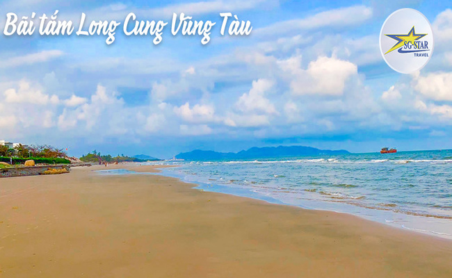
- Bãi biển Long Cung càng ngày càng tiện nghi vì có rất nhiều resort đẳng cấp 5 sao phục vụ nhu cầu nghỉ
dưỡng trong chuyến du lịch. Cảnh vật nơi đây rất hài hòa, bình yên. Bạn có thể tham gia nhất nhiều hoạt
động ở nơi đây như vui chơi, đánh bắt cá, tổ chức các hoạt động ngoài trời.
- Cạnh bờ biển Chí Linh là làng chài mộc mạc. Bạn có thể tham gia một ngày đánh bắt cá cùng người dân
làng chài và thưởng thức những món hải sản bình dân ngay ở đây.
9. Bãi tắm Thủy Tiên Vũng Tàu
- Bãi tắm Thủy Tiên là một trong những bãi biển làm xao xuyến bao nhiêu du khách. Với những cảnh đẹp hút
hồn từ bờ cát trắng cùng với những dòng sóng nước biển xanh dạt dào bên bờ rất thích hợp cho các hoạt
động vui chơi trên bờ biển.
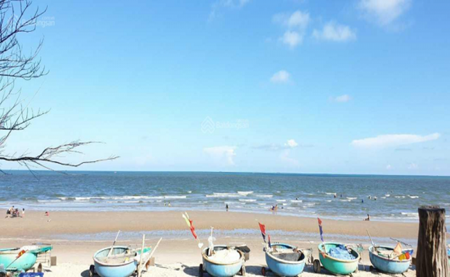
- Hơn nữa bạn có thể tận hưởng hải sản rất rẻ mà lại tươi ngon ở bãi tắm Thủy Tiên. Rất thích hợp cho
những buổi picnic hay cắm trại qua đêm đều rất tuyệt vời. Vì thế đây là một địa điểm tuyệt vời để tận
hưởng kỳ nghỉ cuối tuần tuyệt vời đấy.
10. Bãi tắm Long Cung
- Bãi tắm Long Cung là một trong những bãi biển sạch sẽ, an toàn tại Vũng Tàu phù hợp cho du khách tắm
biển, thư giãn. Bãi biển này là một lựa chọn hoàn hảo để du khách có được một kỳ nghỉ dưỡng trọn vẹn
nhất, với nước biển xanh vắt như ngọc cùng những hàng dừa thẳng tắp đung đưa trong gió rất tuyệt vời.
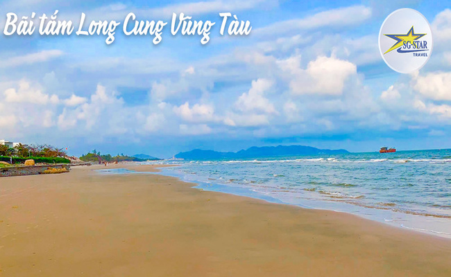
- Bãi biển Long Cung càng ngày càng tiện nghi vì có rất nhiều resort đẳng cấp 5 sao phục vụ nhu cầu nghỉ
dưỡng trong chuyến du lịch. Cảnh vật nơi đây rất hài hòa, bình yên. Bạn có thể tham gia nhất nhiều hoạt
động ở nơi đây như vui chơi, đánh bắt cá, tổ chức các hoạt động ngoài trời.